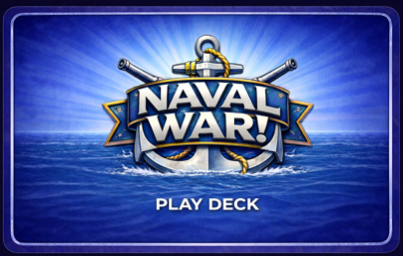
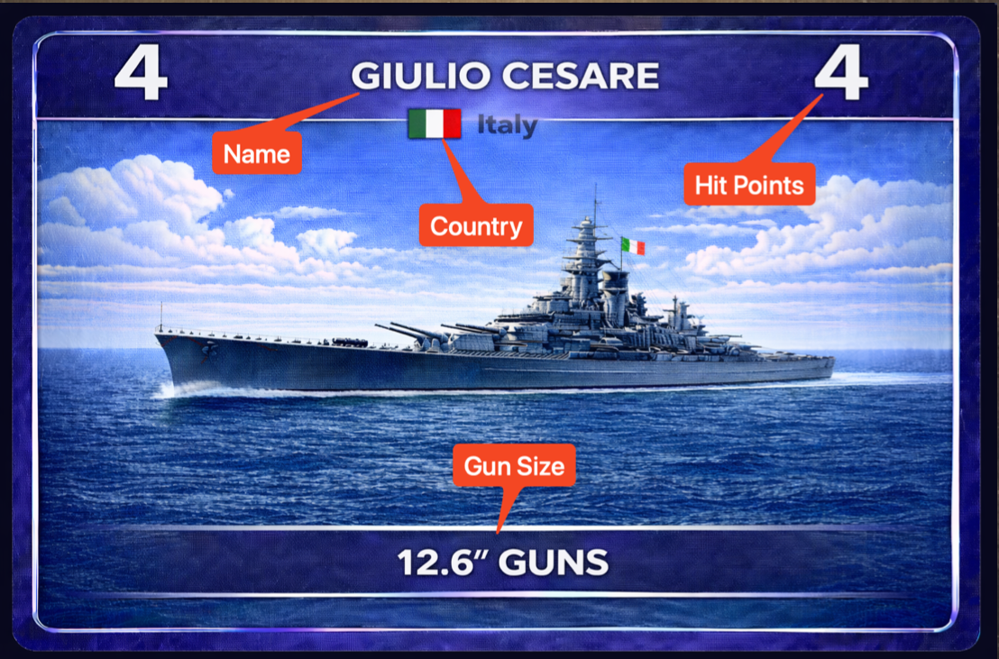

1. Overview
Objective
Command a visible fleet of ships while managing a hidden hand of play cards. Attack enemy fleets with matching salvos, use special cards at the right moment, and collect sunk enemy ships into your Victory Pile.
What Players See
- All fleets are face up and visible to every player.
- Each player’s hand is hidden from opponents.
- Fleet effects like smoke, mines, submarines, and destroyers are public.
- Attached salvos on a ship remain visible until removed or discarded.
Win Condition
- In Skirmish, sink all opposing fleets or lead when the play deck runs out.
- In Campaign, score sunk-ship hit points each round and race to the target score.
- Victory Pile ships are worth the printed hit points on the ship card.
Illustrated Reference
Read The Cards At A Glance
The rules page works better when the card art explains the system right alongside the text. These reference images now anchor the online rules with the same visual language players see at the table.
- The Play Deck cardback represents the shared 108-card draw pile used during the round.
- The ship example shows the fields that matter most during combat: name, country, hit points, and gun caliber.
- Those same values drive the online engine when it validates salvos, sinkings, scoring, and carrier placement.


2. Setup
Prepare The Table
- Shuffle the full 54-card Ship Deck.
- Shuffle the full 108-card Play Deck.
- Deal 5 ship cards to each player to form a fleet.
- Deal 5 play cards to each player.
- Aircraft carriers must be placed behind the rest of that player’s fleet.
- All fleets are public. Only hands remain hidden.
Opening-turn special handling: if a player is dealt a mandatory special card in their starting hand, that card must be resolved and replaced before that player enters the normal draw-and-play cycle.
3. Turn Sequence
Normal Turn Flow
Option A: Normal Draw Turn
- Draw 1 card from the Play Deck.
- If the drawn card is a mandatory special, it must be played immediately.
- If it is not mandatory, it goes into your hand.
- Take exactly one play-phase action: play one card or discard one card.
- After the action resolves, your turn ends.
Option B: Carrier Air Strike Turn
- Instead of drawing, you may commit to carrier air strikes.
- Each afloat carrier may make one strike that turn.
- Roll one die per strike.
- A roll of
1immediately sinks the target ship. - If you choose air strikes, you do not also draw and play a hand card that turn.
After drawing normally, you must take an action before the turn can end. If you do not want to play a legal hand card, you must discard one play card as your action.
4. Special Cards
Card Behavior Reference
Mandatory Immediate Specials
- Minefield: must be played when drawn; cannot be played on your own fleet.
- Submarine: must be played when drawn.
- Torpedo Boat: must be played when drawn.
- Additional Damage: must be played when drawn if a legal enemy salvo stack exists.
- Additional Ship: must be resolved when drawn; it adds a new ship from the Ship Deck.
Hold-For-Later Cards
- Salvo: may be held until you have a matching afloat gun caliber.
- Smoke: placed in front of your own fleet.
- Repair: removes one attached salvo from one of your damaged ships.
- Minesweeper: removes minefields from a chosen fleet.
- Destroyer Squadron: deploys to the battle zone for delayed attack.
Special Resolution Notes
- Smoke: blocks every attack except submarine and Additional Damage until the owner’s next draw phase.
- Minefield: stays on the chosen fleet until cleared by Minesweeper. It damages every ship in that fleet, including ships added later.
- Minesweeper: clears minefields from the chosen fleet and both cards go to the discard pile.
- Repair: removes only one attached salvo, not the entire stack.
- Additional Ship: discards the card, draws the next ship from the Ship Deck, and adds it to your fleet immediately.
5. Combat Rules
Targeting, Damage, and Sinking
Salvos
- You may only play a salvo if you have an afloat non-carrier ship with the matching gun caliber.
- The salvo attaches to the target ship and reduces its remaining hit points.
- Attached salvos remain on the target until removed or discarded.
- When a ship sinks, attached salvos are discarded and the sunk ship goes to the attacker’s Victory Pile.
Carrier Screening
- Aircraft carriers cannot be targeted by salvos while other ships in that fleet remain afloat.
- Carriers may still perform air strikes while afloat.
- Carriers are always placed behind the rest of the fleet.
Die Roll Attacks
- Submarine: roll a d6, sink the target on
5or6. - Torpedo Boat: roll a d6, sink the target on
6. - Carrier Air Strike: roll a d6, sink the target on
1.
Destroyer Squadron
- Deploys to the battle zone with 4 hit points.
- It may be attacked before it activates.
- If it survives until the owner’s next turn, the owner chooses a target fleet and rolls one die.
- The die result is the number of ships sunk in the target fleet.
- If sunk before activation, it is discarded and scores no points.
A sunk ship is immediately considered out of play. It cannot fire salvos, use carrier strikes, or remain a legal target for repair.
6. Game Modes
Skirmish and Campaign
Skirmish
- One round only.
- The last admiral with ships afloat wins immediately.
- If the Play Deck runs out first, the admiral with the strongest Victory Pile wins.
- Captured ships first, then captured hit points, are the primary tiebreakers.
Campaign
- Play multiple rounds.
- At the end of each round, score the hit-point values of ships in your Victory Pile.
- Add those points to your campaign total.
- The first admiral to reach the campaign target wins the campaign.
7. Classic Set
Deck Composition
The online prototype currently uses the Classic Set. The in-game Deck Browser shows a visual preview of every ship and play card template in this set.
| Deck | Total | Notes |
|---|---|---|
| Play Deck | 108 | Salvos plus smoke, repair, minefield, submarine, torpedo boat, destroyers, and more. |
| Ship Deck | 54 | Unique ships only, no duplicates in the deck. |
8. Online Table Notes
How The Online Table Presents The Rules
- Your own fleet and hand are always presented at the bottom of the screen.
- Other occupied seats rotate around you depending on the player count.
- The Target Board mirrors valid enemy targets so you do not need to scroll during play.
- Dice rolls appear in a dedicated resolution banner.
- The Deck Browser shows the exact Classic Set cards and counts used by the prototype.
This page is designed to replace the heavy embedded PDF during play and should be much more web-friendly for the hosted/PWA version.
Illustrated Pages
Rendered PDF Page Gallery
These are the extracted page images from the original rules PDF. They can be opened in a new tab and used as sources for future artwork crops and section illustrations.
 Page 3 • Play card reference
Page 3 • Play card reference
 Page 4 • Special card behavior
Page 4 • Special card behavior
 Page 5 • Ship deck and scoring content
Page 5 • Ship deck and scoring content
 Page 6 • Ships and attacks
Page 6 • Ships and attacks
 Page 7 • Turn flow and combat reference
Page 7 • Turn flow and combat reference
 Page 8 • Additional rules and examples
Page 8 • Additional rules and examples
 Page 9 • Closing reference page
Page 9 • Closing reference page